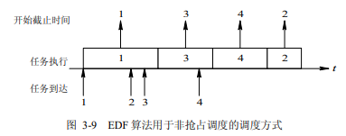

操作系统 问答题
1.引论
1.操作系统有哪些目标？
- 方便性：使计算机系统更容易使用
- 有效性：提高系统资源利用率和提高系统的吞吐量
- 可扩充性：适应计算机硬件、体系结构以及应用发展的要求，能够方便地增加新的功能和模块，并能修改老的功能和模块
- 开放性：指系统能遵循世界标准规范
2.OS的作用可表现在哪几个方面?
- OS作为用户与计算机硬件系统之间的接口：OS 处于用户与计算机硬件系统之间，用户通过 OS 来使用计算机系统。
- OS作为计算机系统资源的管理者：一个计算机系统通常包含处理器、存储器、I/O 设备以及信息对这四类资源，OS 的主要功能也正是对这四类资源进行有效的管理进行有效的管理
- OS实现了对计算机资源的抽象：OS隐藏了对硬件操作的细节，由它们实现了对计算机硬件操作的多个层次的抽象。
3.为什么说操作系统实现了对计算机资源的抽象?
- ① IO设备管理软件实现了对计算机硬件操作的第一个层次的抽象；
- ② 文件管理软件实现了对硬件资源操作的第二个层次的抽象；
- ③ 依此类推，如果在文件管理软件上再覆盖一层面向用户的窗口软件，则用户便可再窗口环境下方便地使用计算机，从而形成一台功能更强的虚拟机；
- ④ OS是铺设在计算机硬件上的多层软件的集合，隐藏了对硬件操作的具体细节，实现了对计算机硬件操作的多个层次的抽象模型；
4.实现分时系统的关键问题是什么? 应如何解决?
关键问题是如何使用户能与自己的作业交互。
（1）及时接收：配置多路卡，并在每个终端配置缓冲区来暂存用户输入的命令或数据。
（2）及时处理：作业直接进入内存，设置一个时间片来使作业轮转运行。
5.实时系统与分时系统的有什么不同之处？
- ① 多路性：实时系统的多路性则主要表现在系统周期性地对多路现场信息进行采集，以及对多个对象或多个执行机构进行控制。而分时系统中的多路性则与用户情况有关，时多时少
- ② 独立性：实时系统中的每个用户在向实时系统提出服务请求时是互不干扰的；而实时控制系统中，对信息的采集和对对象的控制也都是彼此互不干扰
- ③ 及时性：分时系统的及时性是以控制对象所要求的开始截止时间或完成截止时间来确定的，分时系统的及时性是以用户能接受的等待时间来确定的
- ④ 交互性： 实时系统的交互性仅限于访问系统中某些特定的专用服务程序，不像分时系统那样能向终端用户提供数据处理和资源共享等服务。
- ⑤ 可靠性：分时系统要求系统可靠，但实时系统则要求系统具有高度的可靠性。
6.操作系统有哪些基本特性？其最基本的特征是什么?
- 并发：系统中的程序能并发执行
- 共享：指系统中的资源可供内存中多个并发执行的进程共同使用
- 虚拟：指通过某种技术把一个物理实体变为若干个逻辑上的对应物
- 异步：指操作系统允许进程以异步方式允许。进程是以人们不可预知的速度向前推进，这是进程的异步性。
并发和共享是操作系统的两个最基本的特征，它们又是互为存在的条件。
7.⭐并发和并行有什么区别？请举例说明
并行性是指两个或多个事件在同一时刻发生。而并发性是指两个或多个事件在同一时间间隔内发生。
例如，在1秒事件内，0~15ms程序A运行，15~30ms程序B运行，30~45ms程序C运行......。因此可以说，在1s时间间隔内，有3道程序同时运行，但在微观上，程序是分时交替运行的。
8.什么是临界资源？
在一段时间内只允许一个进程访问的资源称为临界资源或独占资源。
9.处理机管理有哪些主要功能? 其主要任务是什么?
- 处理机管理功能，包括进程控制、进程同步、进程通信和调度
- 存储器管理功能，包括内存分配、内存保护、地址映射和内存扩充
- 设备管理功能
- 文件管理功能
主要任务是对对处理机的管理，即对进程的管理。
10.什么是微内核OS?
- 足够小的内核
- 基于客户/服务器模式
- 应用“机制与策略分离”原理
- 采用面向对象技术
11.⭐微内核操作系统具有哪些优点? 它为何能有这些优点?
12.在微内核OS中，为什么要采用客户/服务器模式?
因为C/S模式具有非常多的优点：
- ① 数据的分布处理和存储
- ② 便于集中管理
- ③ 灵活性和可扩充性高
- ④ 易于修改应用软件
2.进程
1.为什么程序并发执行会产生间断性特征?
并发执行是指系统内有多道程序在宏观上"同时"执行，但系统内往往只有一台处理机，因此只能分时地为多个程序服务。就一道程序而言，往往不是一次能够运行完成，而是以"走走停停"的方式完成其运行，这就是并发系统内程序执行的间断性。
2.程序并发执行时为什么会失去封闭性和可再现性?
程序在并发执行时，是多个程序共享系统中的各种资源，因而这些资源的状态将由多个程序来改变，致使程序的运行失去了封闭性。而程序一旦失去了封闭性也会导致其再失去可再现性。
4.为什么说程序并发执行时失去了封闭性会使程序失去不可再现性？请举例说明。
例如，有两个循环程序 A 和 B，它们共享一个变量 N。
程序 A 每执行一次时，都要做 N:=N+1 操作程 序 B 每执行一次时，都要执行 Print(N)操作，然后再将 N 置成“0”。
程序 A 和 B 以不同的 速度运行。
这样，可能出现下述三种情况(假定某时刻变量 N 的值为 n)。
- (1) N:=N+1 在 Print(N)和 N:=0 之前，此时得到的 N 值分别为 n+1，n+1，0。
- (2) N:=N+1 在 Print(N)和 N:=0 之后，此时得到的 N 值分别为 n，0，1。
- (3) N:=N+1 在 Print(N)和 N:=0 之间，此时得到的 N 值分别为 n，n+1，0。
上述情况说明，程序在并发执行时，由于失去了封闭性，其计算结果已与并发程序的执行速度有关，从而使程序的执行失去了可再现性，亦即，程序经过多次执行后，虽然它 们执行时的环境和初始条件相同，但得到的结果却各不相同。
5.在操作系统中为什么要引入进程的概念? 它会产生什么样的影响?
为了使程序在多道程序环境下能并发执行，并对并发执行的程序加以控制和描述，在操作系统中引入了进程概念。
6.什么是进程？它具有哪些特征？
进程是具有独立功能的程序在一个数据集合上运行的过程，是系统进行资源分配和调度的一个独立单位
特征：
- 动态性：进程的实质就是进程实体的执行过程，具有生命周期。
- 并发性：指多个进程实体同存于内存中，且能在一段时间内同时运行。
- 独立性：指进程实体是一个能独立运行、独立获得资源和独立接受调度的基本单位。
- 异步性：指进程是按异步方式运行的。
7.⭐试说明PCB的作用具体表现在哪几个方面，为什么说PCB是进程存在的唯一标志?
PCB的作用：
- ① 作为独立运行基本单位的标志
- ② 能实现间断性运行方式
- ③ 提供进程管理所需要的信息
- ④ 提供进程调度所需要的信息
- ⑤ 实现与其它进程的同步与通信
在进程的整个生命周期中，系统总是通过其PCB对进程进行控制，系统是根据进程的PCB而感知到该进程存在的，所以说PCB是进程存在的唯一标志。
8.⭐试说明进程在三个基本状态之间转换的典型原因。
就绪状态→执行状态：进程分配到CPU资源
执行状态→就绪状态：时间片用完
执行状态→阻塞状态：I/0请求
阻塞状态→就绪状态：I/0完成
9.⭐为什么要引入挂起状态? 该状态有哪些性质?
出于以下需要：
- ① 终端用户的需要
- ② 父进程请求
- ③ 负荷调节的需要
- ④ 操作系统的需要
处于挂起状态的进程不能接收处理机调度。
10.试说明引起进程创建的主要事件。
引起进程创建的主要事件有：用户登录、作业调度、提供服务、应用请求。
11.试说明引起进程被撤消的主要事件。
引起进程被撤销的主要事件有:正常结束、异常结束、外界干预
12.⭐试说明引起进程阻塞或被唤醒的主要事件是什么?
引起进程阻塞的原因
- ① 向系统请求共享资源失败。
- ② 等待某种操作的完成。
- ③ 新数据尚未到达。
- ④ 等待新任务的到达。
引起进程被唤醒（释放）的原因：引起阻塞的事件得到解决
13.何谓操作系统内核? 内核的主要功能是什么?
定义：通常将一些与硬件紧密相关的模块、各种常用设备的驱动程序以及运行频率较高的模块，都安排在紧靠硬件的软件层次中，将它们常驻内存，即通常被称为的OS内核。
功能：
- 支撑功能：中断处理、时钟管理、原语操作。
- 资源管理功能：进程管理、存储器管理、设备管理。
14.同步机制应遵循的规则
- ① 空闲让进。当没有进程处于临界区时，应允许一个请求进入临界区的进程立即进入自己的临界区。
- ② 忙则等待。当已有进程进入临界区时，其它试图进 入临界区的进程必须等待。
- ③ 有限等待。对要求访问临界资源的进程，应保证在有限时间内能进入自己的临界区， 以免陷入“死等”状态。
- ④ 让权等待。当进程不能进入自己的临界区时，应立即释放处理机，以免进程陷入忙等状态。
15.管程与进程有什么不同？
- ① 数据结构。进程定义的是私有数据结构PCB，管程定义的是公共数据结构，如消息队列等
- ② 对数据结构的操作。进程是顺序程序执行有关结构，而管程主要是进行同步操作和初始化操作
- ③ 设置的目的。设置进程的目的在于实现系统的并发性，设置管程是为了解决共享资源的互斥使用问题；
- ④ 工作方式。进程通过调用管程中的过程对共享数据进行操作，该过程就如子程序被调用，因而管程为被动工作方式，进程为主动工作方式
16.为什么要在OS中引入线程?
为了减少程序在并发执行时所付出的时空开销，使0S具有更好的并发性，提高CPU的利用率。
进程是分配资源的基本单位，而线程则是系统调度的基本单位。
17.线程和进程有什么不同？
- ① 调度的基本单位。进程是分配资源的基本单位，而线程则是系统调度的基本单位。
- ② 并发性。进程之间可以并发执行，在一个进程的多个线程之间也可以并发执行。
- ③ 拥有资源 。进程作为系统中拥有资源的一个基本单位，但线程本身不拥有系统资源，而是共享所属进程的资源。
- ④ 独立性。同一进程的不同线程独立性比不同进程之间的独立性低很多，因为同一进程的多个线程共享进程的内存和资源，可能会互相影响。
- ⑤ 系统开销。创建和撤销线程的开销远小于进程的。
- ⑥ 支持多处理机系统。单线程进程只能运行在一个处理机，而多线程进程可以把多个线程分配道多个处理机上并行执行。
18.内核支持线程和用户级线程有什么区别？
- ① 运行空间。用户级线程仅存在于用户空间中的线程，无须内核支持。内核支持线程运行在内核空间。
- ② 线程切换。用户级线程线程切换不需要转换到内核空间。而对于内核支持线程，在同一进程从一个线程切换到另一个线程时，需要从用户态转到核心态，系统开销较大。
- ③ 线程阻塞问题。对于用户级线程，当线程执行一个系统调用时，不仅该线程被阻塞，而且，进程内的所有线程会被阻塞。而在内核支持线程方式中，则进程中的其它线程仍然可以运行。
- ④ 多线程技术。对于内核支持线程，内核本身也可以采用多线程技术，可以提高系统的执行速度和效率。 而在单纯的用户级线程实现方式中，多线程应用不能利用多处理机进行多重处理的优点，内核每次分配给一个进程的仅有一个CPU
19.试说明用户级线程的实现方法。
用户级线程是在用户空间中实现的，运行在“运行时系统”与“内核控制线程”的中间系统上。运行时系统用于管理和控制线程的函数的集合。内核控制线程或轻型进程LWP可通过系统调用获得内核提供服务,利用LWP进程作为中间系统。
3.调度
1.为什么要引入高响应比优先调度算法? 它有何优点?
在批处理系统中，先来先服务算法只考虑了作业的等待时间，而忽视了作业运行时间。而短作业优先算法只考虑了作业运行时间，而忽视了作业等待时间。
高响应比优先调度算法则是既考虑了作业等待时间，又考虑作业运行时间的调度算法，因此既照顾了短作业，又不致使长作业的等待时间过长，从而改善了处理机调度的性能
2.在选择调度方式和调度算法时，应遵循的准则是什么？
（1）面向用户的准则：周转时间短，响应时间快，截止时间的保证，优先权准则。
（2）面向系统的准则：系统吞吐量高，处理机利用率好，各类资源的平衡利用。
3.在时间片轮转法中，应如何确定时间片大小？
一个较为可取的时间片大小时略大于一次典型交互所需要的时机，使大多数交互式进程能在一个时间片内完成，从而可以获得较小的响应时间。
时间片选的过小，会频繁的执行进程调度和进程上下文切换，增加了系统开销。
时间片选的过大，会使每个进程都能在一个时间片内完成，RR算法便退化为FCFS，无法满足短作业和交互式用户的需求
4.公平分享调度算法又是如何做到调度的公平性的？
在公平分享调度算法中，调度的公平性主要是针对用户而言，使所有用户能获得相同的处理机时间，或所要求的时间比例。
5.什么是最早截止时间优先调度算法？举例说明之。
最早截止时间优先调度算法是根据任务的开始截止时间确定的任务优先级调度算法。截止时间越早则优先级越高。

若有四个非周期任务，它们先后到达。系统首先调度任务 1 执行，在任务 1 执行期间，任务 2、3 又先后到达。由于任务 3 的开始截止时间早于任务 2，故系统在任务 1 后将调度任务 3 执行。在此期间又到达作业 4，其开始截止时间仍是早于任务 2 的，故在任务 3 执行完后，系统又调度任务 4 执行，最后才调度任务 2 执行。
6.什么是最低松弛度优先调度算法？举例说明之。
该算法是根据任务的紧急程度，来确定任务的优先级。任务的紧急程度越高，为该任务所赋予的优先级就越高，以使之优先执行。
例如，一个任务在200ms时必须完成，而它本身所需的运行时间就有100ms，因此，调度程序必须在100ms之前调度执行，该任务的紧急程度为100ms。
又如，另一任务在400ms时必须完成，它本身需要运行150ms，则其松弛程度为250ms。
7.何谓“优先级倒置”现象，可采取什么方法来解决?
优先级倒置就是高优先级进程被低优先级进程延迟或阻塞的现象。假如有3个独立的进程P1,P2,P3，优先级P1>P2>P3。P1和P3通过共享的一个临界资源进行交互。假设P3最先执行，进行P(mutex)操作后，进入临界区CS-3。在t1时刻，P2就绪，因为它比P3优先级高，所以P2抢占了P3的处理机而执行。在t2时刻，P1就绪，因为它优先级比P2高，所以抢占了P2的处理机而运行。在t3时刻，P1执行P(mutex)，试图进入临界区CS-1，但因为相应的临界资源被P3占用，所以P1被阻塞，P2继续运行。直到时刻t4，P2结束运行，P3接着运行。直到时刻t5，P3退出临界区，并唤醒P1，由于P1比P3优先级高，故P1抢占了P3的处理机而运行。在上述例子中，P1和P3共享临界资源，导致出现了优先级低的进程比优先级高的进程阻塞了，又因为P2进程的存在延长了P1被阻塞的时间，被延长的时间是不可预知的，由此产生了优先级倒置现象。
解决方法：
（1）当进程进入临界区后，CPU就不能被剥夺；
（2）优先级继承：当高优先级进程P1要进入临界区，去使用临界资源R时，如果已有一个低优先级的P3正在使用该资源，此时P1被阻塞，同时P3继承P1的优先级，直到P3退出临界区。这样一来，即使有比P3优先级高比P1优先级低的进程P2，也不会延长P1被阻塞的时间。
8.⭐为了破坏“请求和保持”条件而提出了两种协议，试比较这两种协议。
① 运行前：第一种协议规定所有进程在开始运行之前，必须一次性的申请其在整个运行过程中所需要的全部资源。而第二种协议允许一个进程只获得运行初期所需的资源后就开始运行。
② 运行过程中：第一种协议在进程运行期间，不能再提出资源请求，从而破坏了请求和保持条件。第二种协议允许在运行期间，进程再逐步释放已分配的且用完的资源，然后再请求新的资源
9.⭐何谓死锁？产生死锁的原因和必要条件是什么？
如果一组进程中的每一个进程都在等待仅由该组中的其它进程才能引发的事件，那么这组进程是死锁的。
产生死锁的必要条件：
- ① 互斥条件。指进程对于所分配到的资源进行排它性使用，即在一段时间内，某资源只能被一个进程占用。
- ② 请求和保持条件。进程已经保持了至少一个资源，但又提出了新的资源请求，而该资源已被其它进程占用，请求进程被阻塞，但是保持已获得的资源。
- ③ 不可抢占条件。进程已获得的资源在未使用完之前不能被抢占，只能在使用完之后自己释放。
- ④ 循环等待条件。发生死锁时，必然存在一个进程-资源的循环链，即P0等待P1占用的资源，P1等待P2占用的资源，......，Pn等待P0占用的资源。
4.存储器管理
1.可采用哪几种方式将程序装入内存？它们分别适用于何种场合？
- ① 绝对装入方式，只适用于单道程序环境。
- ② 可重定位装入方式，适用于多道程序环境。
- ③ 动态运行时装入方式。适用于程序在运行过程中经常要在内存中移动位置的多道程序环境；
2.⭐为什么要引入动态重定位？如何实现？
程序在运行过程中经常要在内存中移动位置，为了保证这些被移动了的程序还能正常执行，必须对程序和数据的地址加以修改，即重定位。引入重定位的目的就是为了满足程序的这种需要。
具体实现方法是在系统中增加一个重定位寄存器，用来装入程序在内存中的起始地址，程序执行时，真正访问的内存地址是相对地址与重定位寄存器中的地址相加之和，从而实现动态重定位。
3.⭐在采用首次适应算法回收内存时，可能出现哪几种情况? 应怎样处理这些情况?
(1) 回收区与插入点的前一个空闲分区F1相邻接，见图(a)。此时应将回收区与插入点的前一分区合并，不必为回收分区分配新表项，而只需修改其前一分区F1的大小。
(2) 回收分区与插入点的后一空闲分区F2相邻接，见图(b)。此时将两分区合并，形成新的空闲分区，但用回收区的首址作为新空闲区的首址，大小为两者之和。
(3) 回收区同时与插入点的前、后两个分区邻接，见图(c)。此时将三个分区合并，使用F1的表项和F1的首址，取消F2的表项，大小为三者之和。
(4) 回收区既不与F1邻接，又不与F2邻接。这时应为回收区单独建立一个新表项，填写回收区的首址和大小，并根据其首址插入到空闲链中的适当位置。
4.什么是基于索引搜索的动态分区分配算法? 它可分为哪几种?
于顺序搜索的动态分区分配算法，比较适用于不太大的系统。当系统很大时，系统中的内存分区可能会很多，相应的空闲分区链就可能很长，这时采用顺序搜索分区方法可能会很慢。为了提高搜索空闲分区的速度，在大、中型系统中往往会采用基于索引搜索的动态分区分配算法。
它分为三种：①快速适应算法 ②伙伴系统 ③哈希算法
5.⭐分区存储管理中常用哪些分配策略? 比较它们的优缺点。
分区存储管理中常采用的分配策略有：首次适应算法、循环首次适应算法、最佳适应算法、最坏适应算法。
- ① 首次适应算法的优缺点：保留了高址部分的大空闲区，有利于后到来的大型作业的分配；低址部分不断被划分，留下许多难以利用的、小的空闲区，且每次分区分配查找时都是从低址部分开始，会增加查找时的系统开销。
- ② 循环首次适应算法的优缺点：使内存中的空闲分区分布得更为均匀，减少了查找时的系统开销；缺乏大的空闲分区，从而导致不能装入大型作业。
- ③ 最佳适应算法的优缺点：每次分配给文件的都是最适合该文件大小的分区；内存中留下许多难以利用的小的空闲区。
- ④ 最坏适应算法的优缺点：给文件分配分区后剩下的的空闲区不至于太小，产生碎片的几率最小，对中小型文件分配分区操作有利；使存储器中缺乏大的空闲区，对大型文件的分区分配不利。
6.什么是页表？页表的作用是什么？
页表是分页式存储管理使用的数据结构。一个进程分为多少页，它的页表就有多少行。每一行记录进程的一页和它存放的物理块的页号、块号对应关系。
页表用于实现从页号到物理块号的地址映射
7.在分页系统中是如何实现地址变换的?
- ①先将页号P与页表长度M比较。若越界，即 P≥M，则表示地址越界并中断。
- ② 若未越界，则将页表始址与页号和页表项长度的乘积相加，便得到该表项在页表中的位置，从中得到该页的物理块号在内存的地址，装入物理地址寄存器。
将有效地址中的页内地址送入物理地址寄存器的块内地址字段中，即可得到要访问的内存物理地址。
8.具有快表时是如何实现地址变换的？
- ① 先将页号P与页表长度M比较。若越界，即 P≥M，则表示地址越界并中断。
- ② 在快表中查找页号P，如果有，则可以直接得到物理块号的位置，并送人物理地址寄存器。
- ③ 如果快表中没有找到页号P，则访问内存中的页表，计算物理块号的地址，再送入物理地址寄存器。同时，将该页表项存入快表。
- ④ 若快表已满，则找到一个老的且不再需要的页表项换出，再存入新的页表项。
9.较详细地说明引入分段存储管理是为了满足用户哪几方面的需要。
- ① 方便编程
通常，程序员们编写的程序访问的逻辑地址是由段号和段内偏移量决定的，这不仅可以方便程序员编程，也可使程序非常直观，更具可读性。
- ② 信息共享
在实现对程序和数据的共享时，是以信息的逻辑单位为基础的。段可以是信息的逻辑单位，因此为共享过程建立一个独立的段就极大简化了共享的实现。
- ③ 信息保护
信息保护同样是以信息的逻辑单位为基础的，因此分段管理方式能更有效和方便的实现对信息的保护功能。
- ④ 动态增长
在实际应用中，往往存在着一些段，由于数据量的不断增加，而使数据段动态增长，相应地它所需要的存储空间也会动态增加。对此，很难采取预先多分配的方法进行解决，而分段存储管理方式能较好的解决这一问题。
- ⑤ 动态链接
运行时动态链接，即在程序运行过程中，当需要调用某个目标程序时，才将该段调入内存并进行链接。 可见，动态链接要求的是以目标程序（即段）作为链接的基本单位，因此，分段存储管理方式非常适合动态链接。
10.分页和分段存储管理有何区别?
共同点：分页和分段都采用离散分配的方式，且都要通过地址映射机构来实现地址变换；
不同点：
① 页是信息的物理单位。
采用分页存储管理方式是为了实现离散分配方式，提高内存利用率，仅仅是系统管理上的需要，对用户是不可见的。
分段存储管理方式中的段则是信息的逻辑单位，通常是一组意义完整的信息，分段的目的是更好的满足用户的需要。
② 页的大小固定且由系统决定。
在采用分页存储管理方式的系统中，用户程序的逻辑地址由硬件决定，因而在系统中页面大小是固定的。而段的长度取决于用户编写的程序。
③ 分页的用户程序地址空间是一维的。
在分页系统中，用户程序的地址是单一的线性地址可见。而分段式用户的行为，所以在分段系统站用户程序的地址可见是二维的。
5. 虚拟存储器
1.虚拟存储器有哪些特征？其中最本质的特征是什么？
（1）多次性：指一个作业的程序和数据允许被分成多次调入内存运行，即只需将当前要运行时的部分调入即可开始运行，以后需要未调入的部分才再调入。
（2）对换性：指一个作业的程序和数据允许在作业运行时换进换出，即进程运行期间，允许将暂不使用的代码和数据从内存换出，以后需要时再换进内存。
（3）虚拟性：指能够从逻辑上扩充内存容量，使用户看到的内存容量大于实际内存容量。这样就可以在小内存中运行大作业，有效改善了内存利用率。
最本质的特征是虚拟性。
2.实现虚拟存储器需要哪几个关键技术？
虚拟内存的实现主要建立在离散分配的内存管理方式上, 所需的具体技术有:
- ① 页表(段表)机制, 作为主要的数据结构
- ② 中断机构, 用于产生缺页中断等
- ③ 地址变换机构, 用于将逻辑地址映射到物理地址
3.在请求分页系统中，页表应该包括哪些数据项？每项的作用是什么？
页表的内容: 页号, 物理块号, 状态位P, 访问字段A, 修改位M, 外存地址
- 状态位P: 用于只是该页是否已调入内存
- 访问字段A: 用于记录本页在一段时间内被访问的次数, 或记录多长时间未访问
- 修改位M: 标记该页在调入内存后是否被修改
- 外存地址: 用于指出该页在外存上的地址
4.⭐试说明在请求分页系统中页面的调入过程。
- ①每当程序所要访问的页面未在内存时，便向 CPU 发出一缺页中断，
- ②中断处理程序首先保留 CPU 环境，分析中断原因后转入缺页中断处理程序。
- ③缺页中断处理程序通过查找页表，得到该页在外存的物理块
- ④如果此时内存能容纳新页，则将所缺之页调入内存，然后修改页表
- ⑤如果内存已满，则须先按照某种置换算法从内存中选出一页准备换出。如果该页未被修改过，可不必将该页写回磁盘；但如果此页已被修改，则必须将它写回磁盘，然后再把所缺的页调入内存，并修改页表中的相应表项，置其存在位为“1”，并将此页表项 写入快表中。
- ⑥在缺页调入内存后，利用修改后的页表，去形成所要访问数据的物理地址，再去访问内存数据。
5.在请求分页系统中，常采用哪几种页面置换算法？
- ① LRU置换算法：这种算法是根据页面调入内存后的使用情况进行决策的。由于无法预测各页面将来的使用情况，只能利用“最近的过去”作为“最近的未来”的近似，因此，LRU 置换算法是选择最近最久未使用的页面予以淘汰。
- ② 最少使用置换算法LFU：这种算法选择在最近时期使用最少的页面作为淘汰页。
- ③ Clock 置换算法：是一种用的较多的LRU近似算法。该算法是循环地检查各页面的使用情况，找出最近未被使用的页面换出。
6.试说明改进型Clock置换算法的基本原理。
在改进型 Clock 算法中，除须考虑页面的使用情况外，还要考虑置换代价。在进行页面置换时，可采用与简单 Clock 算法相类似的算法，其差别在于该算法须同时检查访问位与修改位。这样，选择页面换出时，既要是未使用过的页面， 又要是未被修改过的页面。
7.在请求分页系统中，产生抖动的原因是什么？
产生抖动的根本原因是，同时在系统中运行的进程太多，由此分配给每个进程的物理块太少，不能满足进程正常运行的基本要求，使得每个进程在运行时频繁出现缺页，必须请求系统将所缺的页调入内存，造成在系统中排队等待页面换入换出的进程数目大幅增加。
8.为了实现请求分段式存储管理，应在系统中增加哪些硬件机构？
应该在系统中增加配置：
9.如何实现共享分段的分配和回收？
（1）共享段的分配：在为共享段分配内存时，对第一个请求使用该共享段的进程，由系统为该共享段分配一物理区，再把共享段调入该区，同时将该区的始址填入请求进程的段表的相应项中，还须在共享段表中增加一表项，填写有关数据，把 count 置为 1；之后，当又有其它进程需要调用该共享段时，由于该共享段已被调入内存，故此时无须再为该段分 配内存，而只需在调用进程的段表中增加一表项，填写该共享段的物理地址；在共享段的段表中，填上调用进程的进程名、存取控制等，再执行 count :=count+1 操作，以表明有两个进程共享该段。
（2）共享段的回收：当共享此段的某进程不再需要该段时，应将该段释放，包括撤消在该进程段表中共享段所对应的表项，以及执行 count = count-1 操作。若结果为 0，则须由系统回收该共享段的物理内存，以及取消在共享段表中该段所对应的表项，表明此时已没有进程使用该段。
10.当前可以利用哪几种方法来防止“抖动”？
- ①采取局部置换策略
- ② 把工作集算法融入到处理机调度中
- ③ 利用“L=S”准则调节缺页率
- ④ 选择暂停的进程